Exemplo prático (passo a passo):
- Executando o commit: 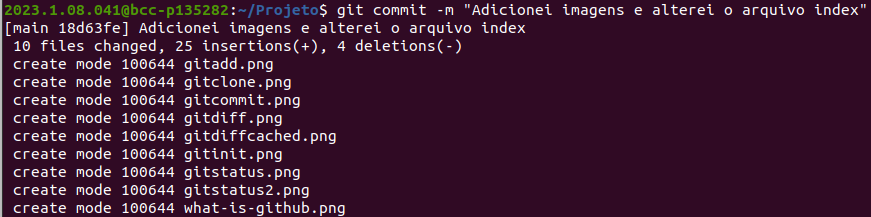
- Exibe o a condição da árvore de trabalho, após o commit:
- Executando o comando reset: 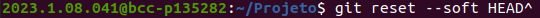
- Percebe-se que exibe o a condição da árvore de trabalho como estava antes do "reset": 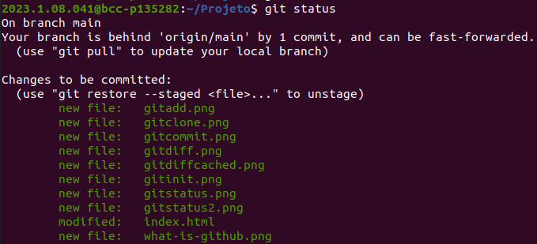

| Instalação | Configuração | Inicialização de um repositório |
| 1. Baixe e instale o git em seu computador pelo site: https://git-scm.com/. Caso esteja no Linux, você pode utilizar os comandos disponíveis https://git-scm.com/download/linux no seu terminal para instalação. | 1. Abra o terminal do computador e configure suas informações de usuário no git utilizando os comandos: | 1.Crie um novo repositório no GitHub clicando no botão “New” na página inicial do GitHub. |
| 2. Crie uma conta no repositório do GitHub pelo site: https://github.com, se você não possuir | 2. git config --global user.name "Seu Nome" | 2. Dê um nome ao repositório e escolha as configurações desejadas |
| 3. para verificar se a instalação foi realizada com sucesso execute git --version | 3. git config --global user.email "seu-email@example.com" | 3. No seu computador, vá para o diretório do projeto em que deseja inicializar o Git e execute o seguinte comando para iniciar o repositório local: git init |
Configure informações de usuário e email para o repositórios local
Inicie um novo repositório ou obtenha de uma URL existente
Revise edições e crie uma transação de commit
Descrição detalhadamente: Exibe os caminhos que têm diferenças entre o arquivo do índice e o commit atual no HEAD, os caminhos que têm diferenças entre a árvore de trabalho e o arquivo do índice, os caminhos na árvore de trabalho que não são rastreados pelo Git. O primeiro é o que você confirmaria executando o comando git commit; o segundo e o terceiro são os que você pode confirmar, executando o comando git add antes de executar o comando git commit.
Exemplo na prática:
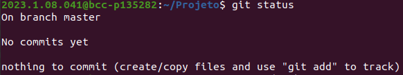Exemplo na prática:
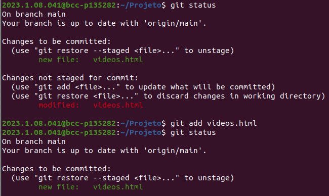Exemplo na prática, após digitar o comando no terminal:
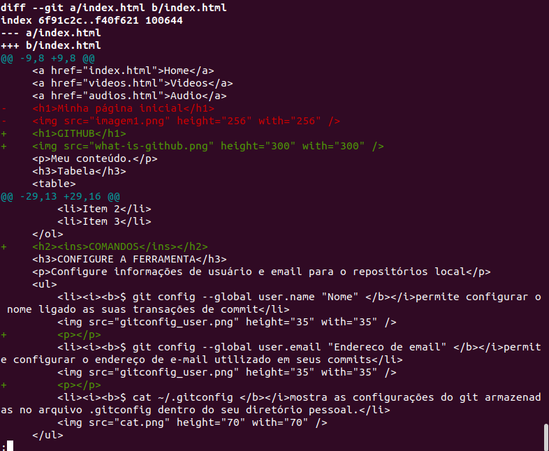Exemplo na prática, depois de realizar o comando "git add" listamos os arquivos com "ls -la"
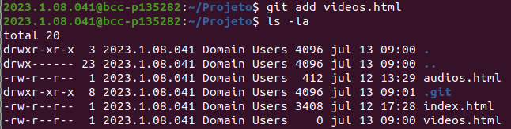add: adiciona um ramo remoto chamado [nome] para o repositório na [url]
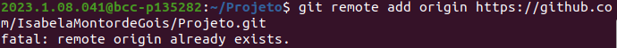--all:Capture todos os ramos remotos.
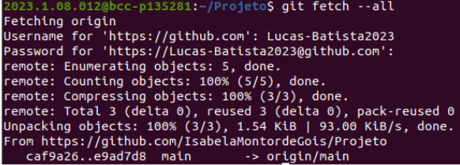-M: Atalho para --mover --força
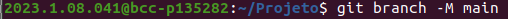Apague enganos e crie um histórico substituto
Exemplo prático (passo a passo):
Mude e remova os arquivos versionado
Arquive e restaure mudanças incompletas
Obtenha ajuda por linha de comando
-e:exibe o endereço de e-mail dos autres, em vez do nome do usuário
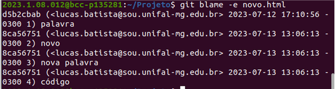